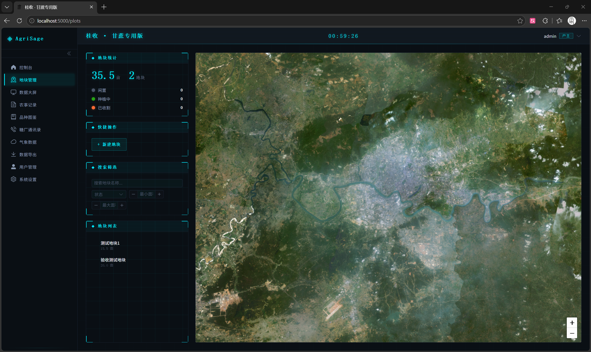
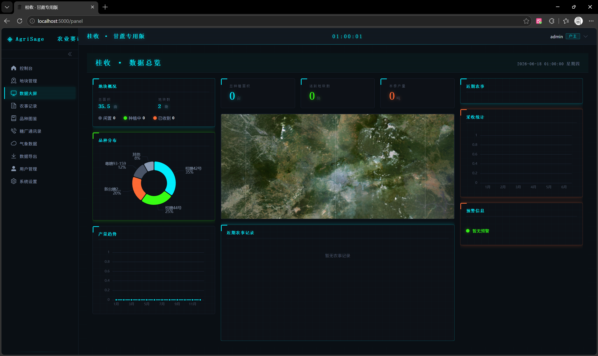
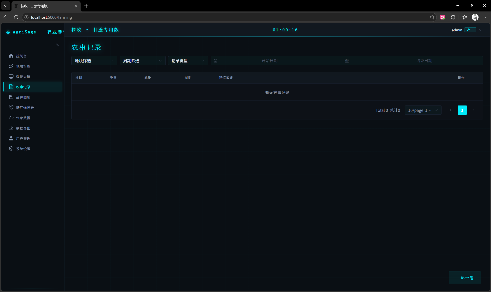
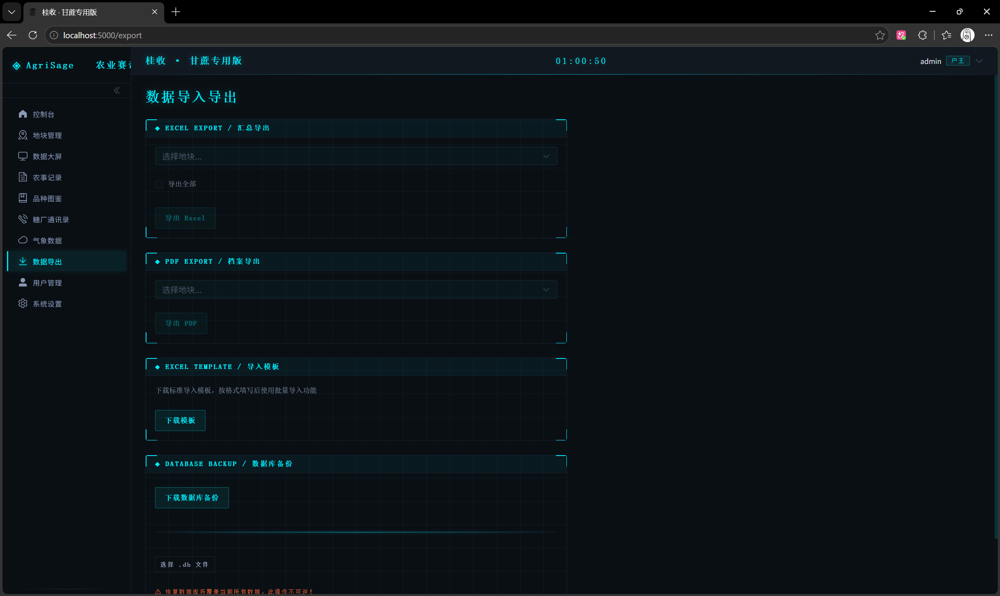
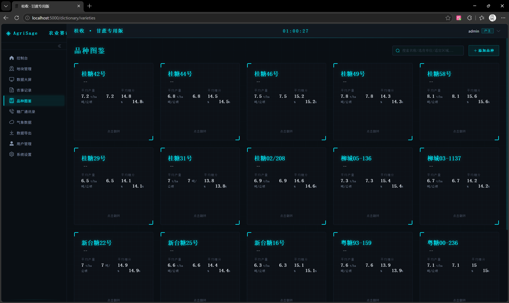
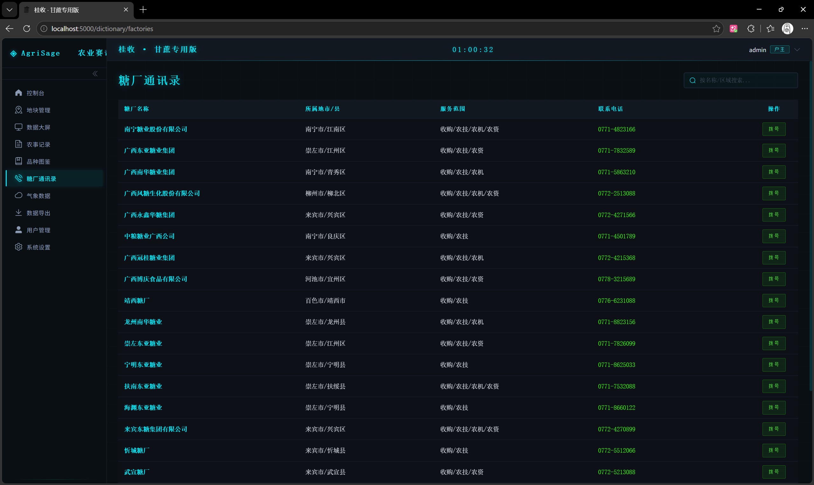
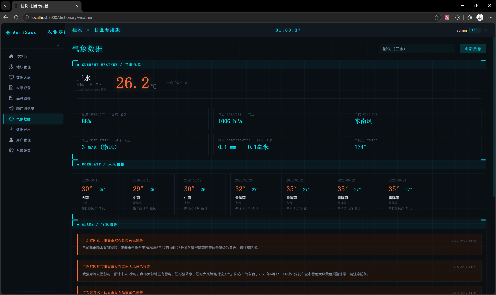
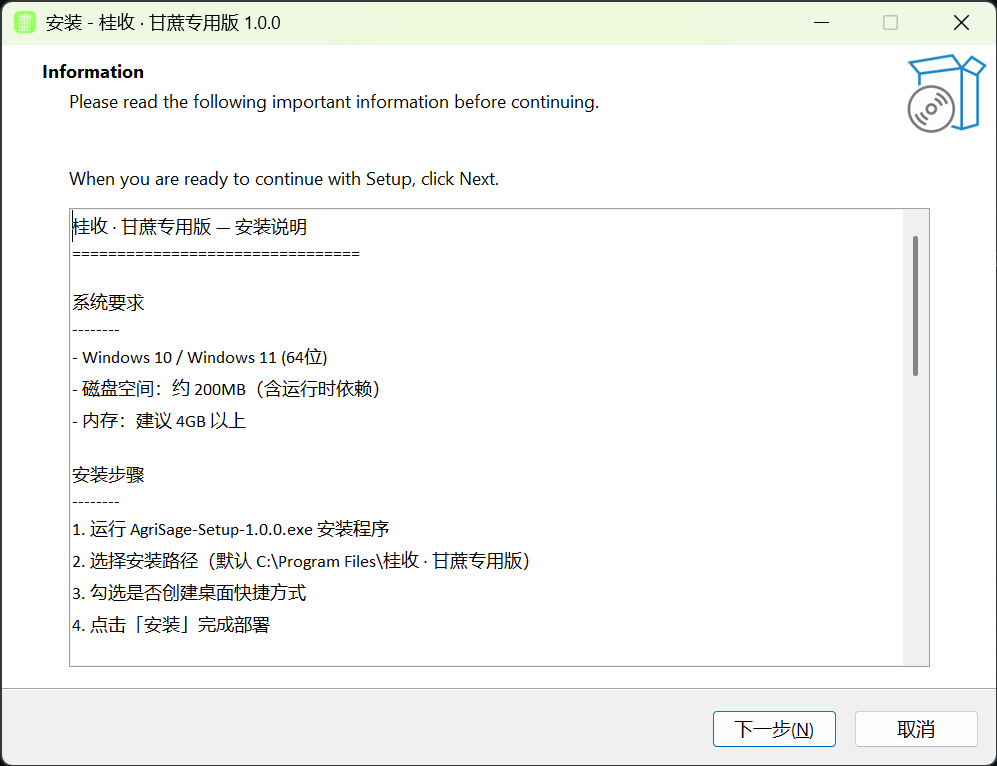
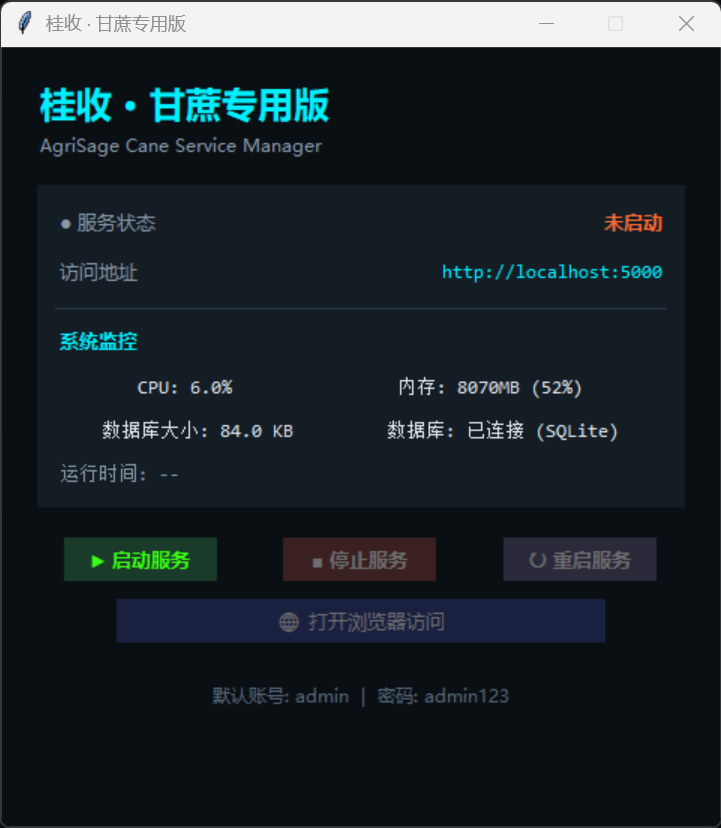
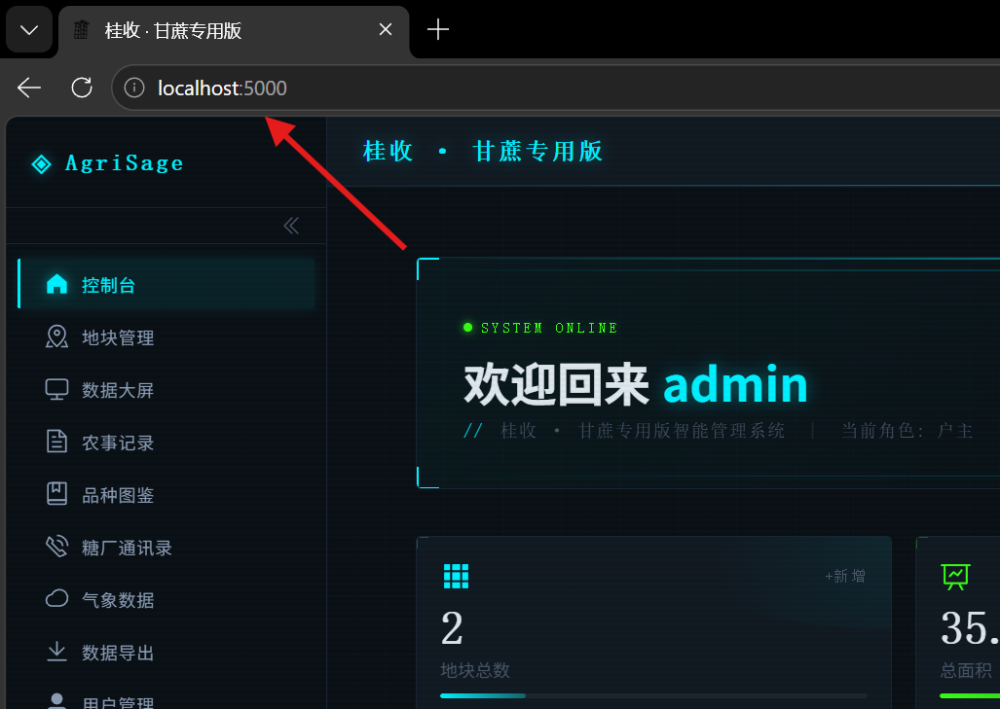

地图打点自动绘制边界，实时计算面积（亩），记录土壤、pH、海拔、坡度等关键信息，每块地都有专属数字档案。
支持新植蔗与宿根 1-3 年周期，宿根自动继承上季品种与地块信息，快速开启新一季种植档案。
施肥、灌溉、病虫害、采收统一入口，按时间轴挂载到具体周期，完整追踪从种到收的每一次农事操作。
按萌芽、分蘖、伸长期、成熟期和收获期分类上传照片，支持时间轴滑动浏览与异常点标注。
支持 Excel 汇总、单地块 PDF 档案、标准导入模板与 SQLite 数据库一键备份，数据迁移与上报一键完成。
内置广西主推甘蔗品种库、糖厂通讯录、气象站历史数据与土壤模板，首次安装即可直接使用，无需联网。

在卫星地图上直接打点绘制地块边界，系统自动计算并显示面积（亩）。左侧数据面板实时汇总地块数量、总面积与状态分布，支持在线/离线双模式地图切换，确保无网络环境也能正常建档。

将分散的地块数据、农事记录与产量信息整合为一块战术级驾驶舱。通过饼图、折线图与滚动列表，管理者可在登录后第一时间掌握全局态势，发现异常及时处理。

施肥、灌溉、病虫害防治、采收四大农事统一入口。每一条记录都精确挂载到具体地块与种植周期，支持按类型、日期、地块多维度筛选，形成从种到收的完整时间轴。

提供多种数据交换方式，既能向上级部门上报 Excel 汇总，也能为单个地块生成 PDF 档案，还能通过标准模板批量导入历史数据，SQLite 数据库一键备份让数据迁移更安心。

内置广西主推甘蔗品种库，包括桂糖、柳城、新台糖等系列。每个品种都配有产量、糖分、抗逆性等关键参数，帮助种植户科学选种，减少试错成本。

按地市整理糖厂服务范围、地址与联系电话，支持一键拨号。砍收季快速对接糖厂，掌握收蔗安排，减少中间环节的信息滞后。

接入实时气象、未来天气预报与灾害预警信息，辅助灌溉、施肥、防灾等农事决策。提前获知霜冻、干旱、暴雨等风险，降低气象灾害带来的损失。
登录后首先进入的指挥中枢。系统运行状态、快捷功能入口、地块分布总览与关键指标卡片集中呈现，让管理者一眼掌握农场全局。

下载安装包后双击运行 AgriSage-Setup-1.0.0.exe，按向导提示完成安装。安装程序会自动部署运行时依赖、前端资源与后端服务，无需手动配置 Python 或 Node 环境。

安装完成后，打开桌面快捷方式运行「桂收·甘蔗专用版」启动器。在 AgriSage Cane Service Manager 中点击绿色的「启动服务」按钮，等待服务状态变为运行中。

服务启动后，点击启动器中的「打开浏览器访问」，或手动在浏览器地址栏输入 http://localhost:5000。使用默认管理员账号登录，即可进入控制台首页，开始管理地块、记录农事与查看数据大屏。
账号：admin
密码：admin123
Python 轻量级后端框架，RESTful API 服务。
渐进式前端框架，极速开发与热更新体验。
单文件嵌入式数据库，零配置、易备份、完全离线。
Vue 3 桌面端组件库，提供完整表单与表格能力。
开源地图引擎，支持在线/离线双模式地块绘制。
数据可视化图表库，用于仪表盘统计与趋势分析。
Excel 与 PDF 导出，满足数据上报与档案打印需求。
跨平台生产级 WSGI 服务器，稳定运行无需复杂配置。